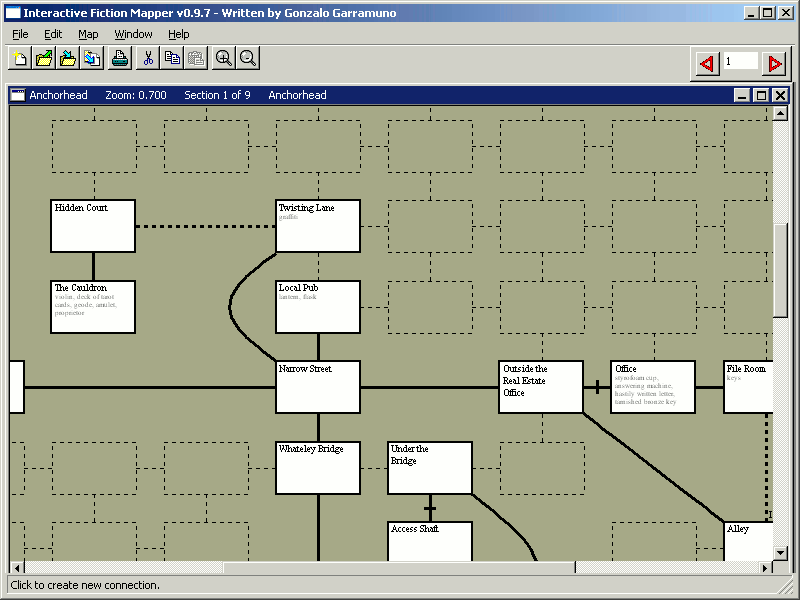
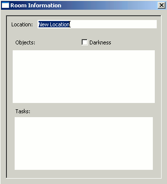
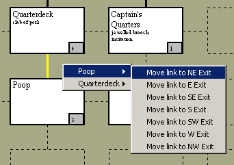
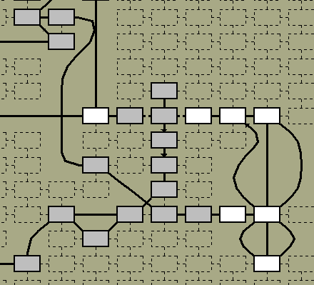
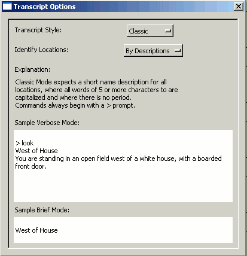
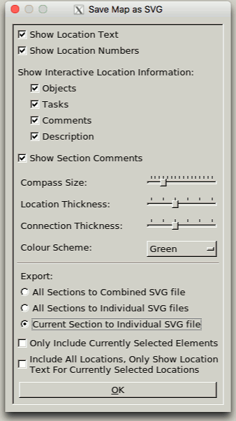

Interactive Fiction Mapper (IFMapper)
by Gonzalo Garramuño
User's Manual
-
Introduction
-
Installation
-
Starting IFMapper
-
Using IFMapper
-
Creating a new game for TADS 3 or Inform
-
Appendix
Introduction
What are Interactive Fiction Games?
These are adventure games, which usually contain little or no graphics but use prose to describe locations, events and, hopefully, a good story. The first interactive fiction game was created in the late 1970s and was known as Adventure (or Colossal Cave), albeit the genre became widely popular and developed most of its conventions with the creation of Infocom in the 1980s.
If you have never played an interactive fiction game, perhaps the best comparison is that they are a grown-up version of "Dungeons and Dragons" or the "Choose Your Own Adventure" series of children's books.
Still, just like any good novel, interactive fiction has evolved into all sorts of different styles, genres, and level of interactivity. And you can find adventures being developed today in a lot of languages like English, Spanish, Italian, German, etc. See the section: "I am new to Interactive Fiction. What games would you recommend?"
What is IFMapper?
IFMapper is a tool for easily mapping these interactive fiction games. As these games rely mainly on text descriptions and often use compass directions for navigation around the game world, it is relatively easy to get lost. In the old days, players would use grid paper to draw their maps, using boxes and lines to show each location and its exits. IFMapper is basically, the 21st century version of that old practice.
Albeit IFMapper is mainly a mapping tool, it can also be used as a design tool in the early stages of development of new games (for either Inform 6 or TADS 3).
Features of IFMapper
- Multi-platform
- Very simple click interface
- Complex paths supported (paths that loop on themselves or connect two remote nodes)
- Automatic connection of rooms thru complex paths using an A* algorithm
- Mousewheel support for zooming in/out
- Middle mouse scrolling
- Rooms can have objects and tasks listed
- Automatic numbering of rooms
- Multiple map editing
- Ability to easily move rooms in map with arrow keys
- Written in a simple and great scripting language (Ruby)
- Adobe PDF output
- W3C Scalable Vector Graphics (SVG) output
- Can read and save IFM files
- Can read and save Trizbort maps
- Can read and save Inform/TADS 3 source code files
- Locking of maps
- Search for keywords in room names, objects or tasks
- Can automap games from Infocom-like transcripts, even while you play them
- Free and open source
Installation
What you'll need
In order to use IFMapper, you need to have the Ruby scripting language installed and FXRuby. IFMapper was originally developed to run under Ruby 1.8 and FXRuby 1.2, but it will probably be compatible with later versions too.
To print PDF documents, you will also need Austin Ziegler's PDF::Writer module.
Where to get the stuff
If your platform is Windows, your best bet is to download the RubyInstaller from:
https://rubyinstaller.org
This installer comes with the latest stable Ruby version and also with the latest FXRuby. It also comes with RubyGems (see RubyGems later).
If your platform is Linux or macOS, you may need to obtain Ruby from your repositories.
For example on Ubuntu:
$ sudo apt-get install ruby
macOS currently comes with Ruby pre-installed, which although it is a tad old will work fine for IFMapper.
After you have Ruby up and running, you should then proceed to install FOX and FXRuby. You can do this by either installing RubyGems (what I'd recommend) or installing them both manually. If you want to use RubyGems, proceed to the "Installing or Upgrading using RubyGems" section.
FXRuby can be found at:
http://www.fxruby.org
After you have FXRuby (which requires the FOX toolkit) installed, you should then be able to install IFMapper.
Installing from a zip file
After you have Ruby and FXRuby properly installed, download the IFMapper zip file from:
https://github.com/ggarra13/ifmapper
Use unzip, WinZip or some other zip decompression tool to open the archive. All files will be placed inside an ifmapper directory. You should be ready to start IFMapper.
If you want to output PDF files from IFMapper, you will also need to install the PDF::Writer library. You can do so using RubyGems or by downloading the PDF::Writer library from:
https://github.com/metaskills/pdf-writer
Installing or Upgrading using RubyGems
RubyGems is a manager of Ruby libraries that should help with automatically installing any library dependencies that IFMapper may need. RubyGems comes pre-installed with the RubyInstaller for Windows. For other platforms, you can obtain it from:
https://rubygems.org
Once RubyGems is installed, you can then open a Windows PowerShell or a shell window and do:
> gem install -r ifmapper
This will download the latest version of IFMapper, as well as all the libraries needed for IFMapper to run (in case they are not installed on your system). If you don't have FXRuby installed, it will get installed for you. On Unix systems, you will probably still need to compile it yourself.
IFMapper (and other libraries) will then be placed inside your Ruby install directory, like:
C:\ruby\lib\ruby\gems\1.8\gems\ifmapper-{VERSION}
Starting IFMapper
Once installed, you can then run IFMapper by either clicking on the IFMapper.rbw file inside the ifmapper directory or invoking IFMapper.rbw from any shell or console.
Assuming everything is installed properly, you should then see the IFMapper window popup with an empty map.
Using IFMapper
The Interface

The IFMapper interface consists of a menu that allows you to access common operations (open/save maps, change settings, etc), a toolbar with a similar functionality, and one or more windows displaying a map canvas.
IFMapper allows you to edit multiple maps simultaneously.
Each map can have multiple "sections", so as to keep different parts of the games organized. Note that these sections have nothing to do with how printing is done and two or more sections could end up being printed together in a page or a single section may end up getting split into a multiple page document once printed.
When you start IFMapper for the first time, you should be placed in an empty map that shows a grid of where rooms and straight connections can be placed.
Navigation
Use your mouse for navigation. If your mouse supports a mousewheel, this can be used for zooming in or out of the map easily.
To pan around the map, use the Middle Mouse Button or, alternatively, ALT + Left Mouse Button (These hotkeys mimic the behavior of Maya and 3D Studio Max, both popular 3D packages). You can also scroll the map using the scrollbars around the canvas.
Creating Locations

You create new Locations or Rooms in the map by just clicking on any of those template boxes. The new location will then be given a default name and settings ('New Location').
Each room added will automatically receive a number, based on creation order.
To modify the name and settings of a location, you can then double click on it and a requester will pop up allowing you to do so.
If you want the requester to pop up as soon as a new room is created, you can turn on Map->Options->Edit on Creation.
This requester also has options to allow you to mark the room as in darkness and to add a list of objects present in the room.
As you play the game, you can also choose to list the tasks that you need to do in the room to progress further (providing you some with a rudimentary walkthru/hint functionality).
This requester can be left open so as to quickly change from room to room.
Besides using the mouse, you can also use the numeric keypad with Num Lock on and use the numbers from 1 to 9 to create a new room in the appropriate direction.
Creating Connections
You can then create connections among rooms by clicking on the non-boxed areas of the map. Depending on where exactly you click, a simple connection will be made between two rooms.
In its default configuration, you can also click to create a connection on an area where no rooms yet exist. IFMapper will then create the missing rooms automatically for you, in addition to the connection.
Note that you can change the behavior of how nodes and connections are created from the Map->Options menu:
Automatic Connection - will create a connection to the previous room for each new room you create.
Create on Connection - will allow you to add both the connection and the missing rooms when you click on some connection area in the map.

Connections can also be modified similarly to rooms, by clicking twice on them. The connection requester allows you to specify the connection as a free, door, locked or special connection. It also allows you to make the connection travel in a single direction or in both directions. You can also add text to the connections to indicate that connection takes you Up/Down or In/Out.

Changing the connection to be one way can also be done by just clicking on them several times, without opening the requester.
Finally, selecting a connection and using the Right Mouse Button gives you access to a context-sensitive menu that allows you to flip the direction of a connection or to shift the connection to some other exit in the room.
Deleting Rooms or Connections
To remove a room or connection, just select it by clicking on it with the Left Mouse Button. Then, press the Delete or Backspace key.
Note that there is currently no Undo, so deleted nodes or connections cannot be restored.
Complex Connections

A lot of text adventures have mazes with exits that lead nowhere and exits that change direction from one room to the next. We refer to these as complex connections.
To create a complex connection, type the letter 'x' or use the Edit->Add Complex Connection menu option. Afterwards, click on the exit next to the first room you want to connect and then click on the exit of the second room.
If you want to get out of the add complex connection mode, just hit Esc at any time.
IFMapper will then try to calculate a path along the map to take you from your first room to the second one.
For a complex connection to happen, the path between those nodes has to be 'free' of other rooms. IFMapper will also try to avoid inter-crossing connections as much as it can, but will still allow them.
To create exits that just loop onto themselves, you can do a complex connection by clicking twice on the same exit or, you can just use CTRL + Left Mouse Button without needing to go into the Complex Connection mode.
Moving Rooms in Map
When building large maps on complex games, you will probably run into the need to shift nodes around. To do so, select on the nodes you want to move by CTRL + Left Mouse Button on them, and then use the arrow keys to shift the nodes one grid unit at a time.
You can also use SHIFT + Left Mouse Button to drag a box around the rooms to select.
If there are any simple or complex connections, IFMapper will keep recalculating those connections on the fly as you move the nodes.
Note that complex connections can sometimes 'fail'. In those cases, you will see the complex connection become taut and tinted red.
Dealing with Multiple Sections
Some adventure games can be rather large and might be split into chapters. In those cases, you may want to take advantage of using multiple sections in your map. This will keep your map organized and may also help you with printing them later on.
You can create and delete sections from the menu, in Map->Sections->Create Section and Map->Sections->Delete Section.
To move from one section to another, you can use the Arrows located in the right section of the toolbar or Map->Sections->Next/Previous Section.
Searching
You can search for words in locations, objects, tasks or descriptions in the current section or in the whole map, using regular expressions.
The search is interactive, a la Emacs, meaning that as you type, the rooms that match the search get highlighted.
The number of matches for the map and the section is display in the status bar.
You can use the Next/Previous button to keep centering your view on each match (and automatically moving thru sections if you are matching stuff in the whole map).
Preferences
IFMapper allows you to change and set preferences on a per map basis (colors, editing options, etc). You can also save your preferences so that IFMapper will boot with those settings in place for creating new maps.
Saving and Loading Maps
To save a map you are editing, you can go to File->Save or File->Save As. The internal format of IFMapper's maps is the .map format, which is binary format. This format saves all your map preferences as well as all the connections and descriptions.
To load a map, you can then use File->Open. Besides IFMapper's own .map format, IFMapper also supports other popular formats within the IF community. IFMapper can read:
- .ifm files (Dave Chapeski's IFM, a popular free Unix mapping/walkthru tool)
- .gmp file (GUEmap's maps, a shareware (v1) / open source (v2) mapping tool for Windows)
- .inf files (Inform 6 source code files)
- .inform files (Inform 7 source code files)
- .trizbort files (Trizbort map files)
- .t3m or .t files (TADS 3 makefiles or source code files)
Locking Maps
Once you finish an adventure game, you can then lock the map for distribution.
You can do so by going into Map->Map Information and click on the Read-Only switch, making sure you then save the map as a .map file (IFMapper's native format).
Making the map read-only will not allow you to modify the map anymore (and thus will prevent accidentally moving or changing room descriptions by mistake).
When reading any IFM file, Read-Only mode is entered automatically, as it is assumed these maps were created and finished elsewhere. If you need to modify them, just untick the Read-Only switch in the Map Information box again.
Mapping Games from Transcripts (Automapping)
New to v0.8, the feature of automapping was added. The way automapping works is that it will read a transcript or log of your game, and will attempt to parse it to generate rooms and connections (even while you are playing it!).
To use automapping, go to your game and start a transcript. Usually this is done by doing:
> verbose
> script
and then specifying the name of the file.

Then, go to IFMapper and go to a map (usually an empty one) and do:
Map->Automap->Start. This will pop up a file requester for you to feed IFMapper the name of the transcript.
Then, you will be asked thru a requester to select some options.
The options include how will the automapper identify locations as being unique. The automapper can determine whether you are in a new location by comparing the room description (the default) or by comparing just the short name of the room. Games that have rooms with the same short names (usually, mazes) will benefit from being identified by the room description while games that often change the room description on several visits to it might be mapped better using just short names. Note that you can also switch from one method to another at any time later on.
Another option allows you to specify what type of transcript you are dealing with. Most games use the "Classic" format, albeit some old Infocom games (mainly Witness and Moonmist) used a tad different format.
And voila. Immediately, you should see IFMapper get to work and start creating locations and connections.
If you continue playing your game and the 'script' command is still in operation, IFMapper will try to interactively map your game. This works very well for games running under WinFrotz, for example, albeit some other interpreters might not append text to transcripts as soon as you run a command, leading to a less interactive automapping (you'll probably have to type several commands before the interpreter will update the transcript file).
Besides trying to parse for locations and movements, automapper will also try to parse for objects in the room, by monitoring your 'get' or 'take' commands and remembering where each object was first found, so as to add it to the appropriate room.
Note that, at any point during your mapping, you can pop up the automapper properties again to switch from automapping using descriptions to using short names.
How does the Automapper distinguish locations?
As we said before, the automapper will parse all the game text, looking for room descriptions. Not just the replies to moving commands.
This is done so that teleporting commands (such as magical words) or special events that take you other places will work.
Room locations are determined by finding the room's short name: a string of text where all of its words of 4 or more letters are capitalized (or where the string follows the format specified, in case of Witness/Moonmist format).
The paragraph following that is assumed to be a room description.
Depending on your automapper settings, the automapper will give preference to the room description or to the room's short name to determine whether a certain room has already been visited.
Limitations on Automapping
Albeit automapping is very cool and powerful, there are some limitations on it you should be aware of.
First, it only works with games written in English.
Second, you should try to use automapping with verbose mode. Automapping will try to rely on the room description to distinguish one room from the next, instead of just the room's short name.
If your game is in brief or normal mode, automapping could end up getting confused about interpreting a previously visited location as a new location, as it could interpret an object or a character description as part of the room description.
Even with full verbose mode, automapping may get confused if the description changes dramatically (like the demolished house in The Hitchhiker's Guide to the Galaxy).
Automapping also may not help much when it comes to mazes, where all their descriptions are identical or in cases where exits are chosen at random (Adventure/Colossal Cave).
Some games don't follow the Infocom standard of labelling locations using a short capitalized description (for example, FailSafe). These games cannot be automapped.
Finally, the layout algorithm used in the automapper is not exceptional and it can lead to maps with intercrossings or with rooms placed too far apart.
Remember, though, that you can still help the automapper by manually moving or removing rooms at any time if you are interactively automapping a transcript.
If for some reason the automapper does not detect a room automatically, you can also at any time create that room yourself and from then on, the automapper will be aware of it.
Exporting Maps to Scalable Vector Graphics (SVG) Format

New to v1.2 and improved in v2.1.0, a feature has been added to let
you export maps to a Scalable Vector Graphics (SVG) format that can
be printed and interacted with using a web browser. When you have
completed a map, click File->Export->Export as SVG...
to open the Save Map as SVG dialog box.
There are various options available to customise the output, each
with a tooltip that displays further detail when the mouse cursor
hovers over it. The first set of checkboxes toggle whether various
parts of the map are included, such as the Location Text, Location
Numbers, Section Comments etc.
The Compass Size slider allows you to modify the size of the
compass graphic included in the SVG, or disable it completely. The
Location and Connection Thickness sliders change the width of the
lines used to draw the Location boxes and the Connection lines
between them, respectively, whilst the Colour Scheme option
modifies the colour used for a few of the optional items, including
the Interactive Location Information menu and Location Number.
You can choose between the default option of exporting all of the
sections of the map to a single SVG file, exporting all the map
sections to individual SVG files or only exporting the current
section to an SVG file.
The latter option enables two more checkboxes - if you also check
the Only Include Currently Selected Elements option, then the SVG
file will only contain those locations that have currently been
selected in the main window. This allows you to create a partial
SVG map, which can be used as an aid for new players.
The last option - Include All Locations, Only Show Location Text
For Currently Selected Locations - will output a complete map with
all locations shown, but only the currently selected locations will
have their Location Text included. Similar to the previous option,
this allows the creation of customised partial maps which can be
used as a template by new players. Only Connections that are
currently selected will be drawn.
Note: no matter what options are selected, the starting location -
no. 1 - of a map will always be included.
Once you have specified your preferred options, click the OK
button and specify a filename for the SVG output.
Creating a new Inform/TADS 3 game
IFMapper now allows you to also spit out Inform or TADS 3 source code for a map.
This means you can now use IFMapper to easily create the basic skeleton for a new game from scratch.
With IFMapper, you can place your objects, your NPCs and locations with their doors/exits in your game. You can also type in your descriptions for each location.
To do this, make sure to activate the display of room descriptions:
Map->Display->Location Description
You can then type in all your room descriptions and objects manually and then, once your map is finished, use:
File->Export->Export to Inform
File->Export->Export to TADS3
These option will create a set of Inform or TADS 3 source files (one per map section), which you can then immediately compile and play with.
Obviously, for a real game, the .inf or .t files you get out of IFMapper are just a skeleton, as you will still have to code manually all the logic in your game.
Appendix
I am new to Interactive Fiction. What games would you recommend?
If you can get a copy of it (search for The Lost Treasures of Infocom II collection or similar), I think Wishbringer from Infocom is probably one of the nicest introductory games.
Its puzzles are not that tricky and are also pretty logical.
Once you master it, you could then try Planetfall, which has one of the most lovable characters in any adventure game.
If you cannot get hold of those Infocom games, Emily Short's City of Secrets is a very nice introductory game and probably one of the most polished adventures I have seen.
Andrew Plotkin's Dreamholder is also somewhat a nice introductory game as the game will help you with your commands a little as you begin. Note, however, that the game's puzzles are anything but easy.
Contacting the Author
Currently, I can be reached at:
ggarra13 AT domain
(Where "domain" is gmail.com )